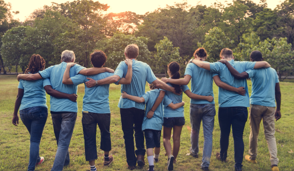

Serving Holly Ridge, Surf City, Hampstead, Rocky Point, Scotts Hill, Sneads Ferry, Jacksonville, Topsail Beach, and North Topsail Beach. Share the food on your table with our variety of programs and opportunities.

Families and individuals can shop for grocery items once per week. The pantry is open 4 days a week:
Meals Until No Child Hungers (MUNCH) is our school backpack program. Partners of Share the Table and community individuals have teamed up to help serve Topsail area elementary and middle schools. Food is packed in backpacks and sent home every Friday with students in need. This program is also offered throughout the summer when backpacks are delivered by volunteers to those children in need. In 2019, we also added a food closet to the high school.
A meal is offered to anyone who is hungry or lonely. There are no eligibility requirements. Families and individuals are welcome. Sunday nights, doors open at 4:00pm, and we serve at 4:30pm. .
21 Perkins Rd
Hampstead, NC 28443
Email: sharethetablenc@gmail.com
Holly Ridge, Surf City, Hampstead, Rocky Point, Scotts Hill, Sneads Ferry, Jacksonville, Topsail Beach, North Topsail Beach.